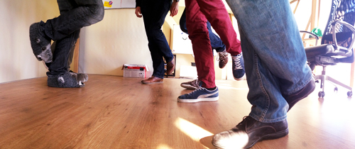

Jan Paul Posma, Merijn Terheggen, 28 March 2013
One-legged standup
I have mixed feelings about meetings. They are necessary to get the team on the same page, but they often feel like wasted time. At Factlink we try to keep our meetings short by using agile practices: a short standup, quick planning sessions, and a brief demo plus retrospective. However, recently our meetings have become increasingly longer.
When reducing our sprint cycle to one week, we had to cut most of our meeting times in half (except standup). The new times should have been:
- Sprint planning: 1 hour
- Demo: ½ hour
- Retrospective: ½ hour
- Standup: 15 minutes
With the demo we usually hit our target. Since we have one each week, only a limited set of features can be demoed. At the demo there is also more pressure, because we don’t want to bore our guests with technical details. The retrospective often goes a bit over time, but that’s probably because we have beers afterwards, kick back and reflect on the past week.
However, a couple of weeks ago we noticed that both our standup and sprint planning became way too long. We’ve had sprint plannings of over 2 hours, and standups of 30–45 minutes.
We did two things to shorten our meetings. First, we started strictly enforcing time limits for meetings. When a time limit is reached, the meeting ends right then. This may be annoying at first, but it gives us a better feeling for how much time there still is in a meeting, and consequently an idea about what might not need to be said. This way, we develop an ‘intuition’ that helps us assess when to stop a discussion.
Our second measure was the one-legged standup. The idea of a standup is that standing becomes annoying after a while, so meetings stay short. Apparently it didn’t bother us enough (or we developed some serious standing-stamina). Now everyone had to stand on one leg throughout the entire standup. It worked wonders: the first day our standup took less than 10 minutes, while we still discussed every story on the board.

After about a week we stopped with the one-legged standup, as we felt we had gotten used to shorter standups again. It seems to have worked: we haven’t had a standup longer than 15 minutes since then. Our other meetings have become shorter as well. This week’s sprint planning ended after exactly one hour, without any intervention.
Originally from factlink.com/blog/one-legged-standup; moved here in November 2020.